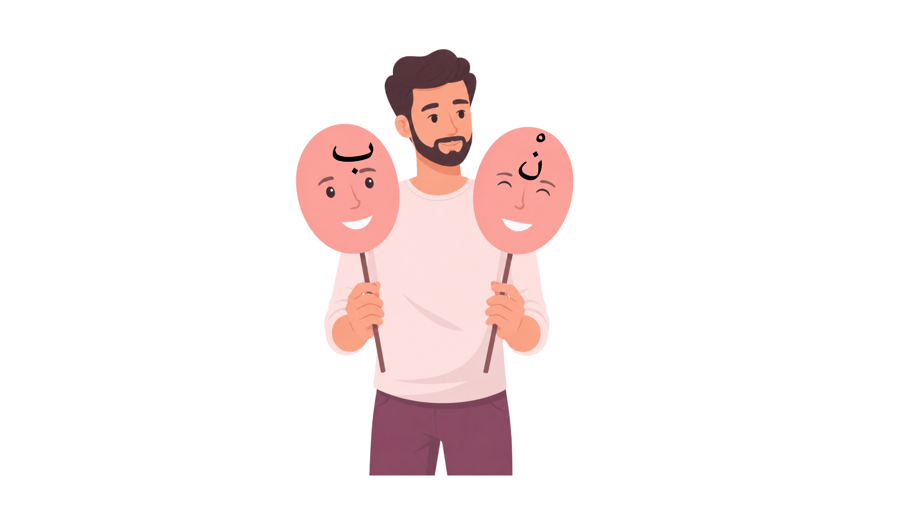

<!doctype html>
<html lang="tr">
<head>
<meta charset="utf-8">
<meta name="viewport" content="width=device-width,initial-scale=1,viewport-fit=cover">
<title>Tenvin ve Sakin Nunun Halleri: İklab</title>
<style>
:root{--teal:#0e8f91;--teal2:#0a686c;--gold:#d8a73b;--cream:#fff7e7;--ink:#232323;--good:#19733a;--bad:#a52a2a;--muted:#6f7777;--shadow:0 14px 35px rgba(0,0,0,.22);--r:22px}
*{box-sizing:border-box}html,body{margin:0;min-height:100%;font-family:Arial,"Segoe UI",sans-serif;background:#073f45;color:var(--ink)}button,input{font:inherit}
body{background:radial-gradient(circle at 50% 20%,#1ba0a0 0,#0b686d 42%,#063b42 100%);overflow-x:hidden}
#app{min-height:100vh;display:flex;align-items:center;justify-content:center;padding:18px}.screen{width:min(1500px,96vw);min-height:min(860px,94vh);background:linear-gradient(180deg,#fffdf7,#f4ead4);border:8px solid #147c83;border-radius:30px;box-shadow:0 0 0 4px #f1c66b inset,var(--shadow);position:relative;overflow:hidden}.screen:before{content:"";position:absolute;inset:0;pointer-events:none;background:linear-gradient(135deg,rgba(255,255,255,.55),transparent 18%,transparent 82%,rgba(255,255,255,.25))}
.topbar{display:flex;align-items:center;gap:18px;padding:18px 28px;background:linear-gradient(180deg,#147f85,#0d666d);color:white;border-bottom:4px solid #d4a33c;position:relative;z-index:2;flex-wrap:wrap}.title{font-size:clamp(24px,2vw,38px);font-weight:800;flex:1}.hud{display:flex;gap:14px;align-items:center;flex-wrap:wrap}.pill{background:rgba(255,255,255,.15);border:1px solid rgba(255,255,255,.35);padding:10px 15px;border-radius:999px;font-weight:700}
.content{position:relative;z-index:1;padding:30px;min-height:calc(100% - 88px)}.center{display:flex;align-items:center;justify-content:center}.column{display:flex;flex-direction:column;gap:18px}.row{display:flex;gap:24px;align-items:center}.wrap{flex-wrap:wrap}.grow{flex:1}.hidden{display:none!important}
.hero{display:grid;grid-template-columns:1.1fr .9fr;gap:28px;align-items:center;height:100%}.panel{background:rgba(255,255,255,.82);border:2px solid #d0b078;border-radius:24px;padding:28px;box-shadow:0 8px 24px rgba(0,0,0,.12)}
.hero h1{font-size:clamp(34px,4vw,68px);line-height:1.06;margin:.2em 0;color:#0d676c}.hero p{font-size:clamp(18px,1.6vw,28px);line-height:1.5}.hero-art{max-width:100%;max-height:620px;object-fit:contain;filter:drop-shadow(0 16px 20px rgba(0,0,0,.15))}
.label{display:block;font-weight:800;margin-bottom:8px}.nameInput{width:100%;padding:16px 18px;border-radius:16px;border:2px solid #7aa8a4;font-size:22px;background:#fff}
.btn{border:0;border-radius:16px;padding:15px 24px;font-size:20px;font-weight:800;cursor:pointer;box-shadow:0 7px 0 rgba(0,0,0,.18);transition:.16s transform,.16s filter}.btn:hover{filter:brightness(1.05)}.btn:active{transform:translateY(4px);box-shadow:0 3px 0 rgba(0,0,0,.18)}.btn:focus-visible{outline:4px solid #1c5fd4;outline-offset:3px}
.btn-primary{background:linear-gradient(#18a3a4,#0c7479);color:#fff}.btn-gold{background:linear-gradient(#f3c655,#d99a1e);color:#3c2a00}.btn-good{background:linear-gradient(#52b64c,#2d8e31);color:white}.btn-bad{background:linear-gradient(#e1796c,#b53c35);color:white}.btn-ghost{background:#fff;border:2px solid #8d9c9b;color:#254b4c}.btn-purple{background:linear-gradient(#d996ff,#b05be2);color:#2d1138}.btn[disabled]{opacity:.45;cursor:not-allowed;filter:grayscale(.8)}
.lesson-grid{display:grid;grid-template-columns:1fr 1fr;gap:26px;align-items:center}.stage{background:#160808;border-radius:22px;padding:24px;min-height:470px;display:flex;align-items:center;justify-content:center;position:relative;overflow:hidden}.stage img.bg{position:absolute;inset:0;width:100%;height:100%;object-fit:cover;opacity:.96}.stage img.character{position:relative;z-index:2;max-width:58%;max-height:430px;object-fit:contain}
.info h2{font-size:clamp(30px,3vw,50px);color:#0d676c;margin-top:0}.info p,.info li{font-size:clamp(18px,1.5vw,25px);line-height:1.55}.mini-cards{display:grid;grid-template-columns:repeat(2,minmax(0,1fr));gap:16px}.mini{background:#fff;border:2px solid #dcc48c;border-radius:18px;padding:18px;font-size:20px}
.sectionSteps{display:grid;grid-template-columns:repeat(3,minmax(0,1fr));gap:16px;margin:20px 0}.stepCard{padding:16px;border-radius:18px;background:#fff;border:2px solid #e2c98e;text-align:center;display:flex;flex-direction:column;justify-content:flex-start;min-height:216px}.stepCard h3{margin:0 0 8px;font-size:clamp(18px,1.45vw,26px);line-height:1.12;color:#0d6e72;word-break:normal;overflow-wrap:normal}.stepCard p{margin:0;font-size:clamp(16px,1.1vw,19px);line-height:1.4}
.mapWrap{display:flex;align-items:center;justify-content:center}.mapWrap img{width:min(1250px,95%);max-height:700px;object-fit:contain;filter:drop-shadow(0 10px 18px rgba(0,0,0,.18))}.exploreGrid{display:grid;grid-template-columns:repeat(4,minmax(0,1fr));gap:16px;margin-top:20px}.discover{background:#fff;border:2px solid #d5be83;border-radius:20px;padding:18px;min-height:140px}.discover b{display:block;color:#0d6d70;font-size:24px;margin-bottom:8px}.discover p{font-size:18px;line-height:1.45;margin:0}
.quizLayout{display:grid;grid-template-columns:minmax(340px,.85fr) minmax(520px,1.15fr);gap:28px;align-items:start}.cardView{background:#fff;border-radius:24px;border:3px solid #d6b96e;min-height:560px;padding:24px;display:flex;flex-direction:column;align-items:center;justify-content:center;box-shadow:var(--shadow)}.arabicCard{width:min(620px,96%);max-height:210px;object-fit:contain}.audioBtn{margin-top:18px;border-radius:999px;width:72px;height:72px;border:4px solid #64c8db;background:#39be2d;color:white;font-size:34px;cursor:pointer}.audioBtn:focus-visible{outline:4px solid #1c5fd4}.questionPanel{min-height:560px;display:flex;flex-direction:column;justify-content:center}.questionText{font-size:clamp(26px,2.6vw,44px);font-weight:800;text-align:center;margin-bottom:24px;color:#184e51}.answerRow{display:grid;grid-template-columns:1fr 1fr;gap:20px}.feedback{min-height:72px;margin-top:18px;border-radius:16px;padding:15px 18px;font-size:20px;font-weight:700;background:#f6f0df;border:2px solid #d7c79e}.feedback.good{background:#e6f6e9;border-color:#69ae75;color:#145e2b}.feedback.bad{background:#fde9e6;border-color:#d47e73;color:#8a231c}.progressTrack{height:14px;border-radius:999px;background:#cbd7d6;overflow:hidden}.progressFill{height:100%;width:0;background:linear-gradient(90deg,#1bb3aa,#f1bd45);transition:width .3s}
.lipsGrid{display:grid;grid-template-columns:1fr 1fr;gap:28px}.lipCard{padding:24px;background:#fff;border:2px solid #d6bc80;border-radius:22px;text-align:center}.lipCard img{max-width:100%;height:220px;object-fit:contain}.lipCard h3{font-size:28px;color:#0e7073}.lipCard p{font-size:20px;line-height:1.5}
.assessBox{max-width:1100px;margin:0 auto}.optionBtn{text-align:left;min-height:84px;display:flex;align-items:center;justify-content:flex-start;line-height:1.4}.tiny{font-size:16px;color:#5e6c6d}
.evidenceLayout{display:grid;grid-template-columns:1.15fr .85fr;gap:30px;align-items:start}.evidencePool{display:grid;grid-template-columns:1fr 1fr;gap:16px}.evidenceCard{position:relative;background:#eef4f4;border:3px solid #91a4a4;border-radius:18px;padding:8px;cursor:grab;min-height:112px;display:flex;align-items:center;justify-content:center;box-shadow:0 8px 16px rgba(0,0,0,.12);transition:.15s transform,.15s opacity,.15s border-color}.evidenceCard:active{cursor:grabbing}.evidenceCard.selected{outline:5px solid #f0b735;outline-offset:2px}.evidenceCard.placed{opacity:.35;filter:grayscale(.7);cursor:default}.evidenceCard img{width:100%;max-height:94px;object-fit:contain;pointer-events:none}.evidenceAudio{position:absolute;left:8px;top:8px;width:48px;height:48px;border-radius:50%;border:3px solid #55b8d1;background:#2fae29;color:white;font-size:22px;z-index:3;cursor:pointer}.dropZoneWrap{display:flex;flex-direction:column;align-items:center;gap:15px}.dropZone{width:min(470px,90vw);aspect-ratio:1/1;border-radius:50%;border:10px dotted #d7d7d7;outline:4px solid #43a743;outline-offset:-18px;background:linear-gradient(180deg,#fff,#e6f3df);display:flex;align-items:center;justify-content:center;position:relative;padding:60px;box-shadow:inset 0 0 40px rgba(76,170,76,.14)}.dropZone.dragover{background:#dff4d9;transform:scale(1.015)}.dropLabel{position:absolute;top:46%;left:50%;transform:translate(-50%,-50%);font-size:64px;color:rgba(60,120,70,.18);font-weight:900;pointer-events:none}.dropItems{display:flex;flex-direction:column;gap:8px;width:100%;z-index:2}.dropMini{background:#fff;border:2px solid #49a54a;border-radius:12px;padding:6px;display:flex;align-items:center;justify-content:center}.dropMini img{max-width:100%;max-height:68px;object-fit:contain}.evidenceHelp{font-size:18px;line-height:1.45;color:#4c5b5b;text-align:center}.evidenceStatus{font-size:19px;font-weight:700;color:#0d6d70}.evidenceControls{display:flex;gap:12px;flex-wrap:wrap;justify-content:center}
.tfWrap{max-width:1260px;margin:0 auto}.tfLegend{display:flex;gap:18px;align-items:center;margin:12px 0 18px 8px}.tfHead,.tfChoice{width:72px;height:72px;border-radius:50%;border:5px solid #d5a948;background:radial-gradient(circle at 35% 30%,#19a0a1,#087075 65%,#045358);color:#fff;font-size:34px;font-weight:900;display:inline-flex;align-items:center;justify-content:center;box-shadow:0 0 0 3px #08767a inset,0 5px 10px rgba(0,0,0,.18)}.tfGrid{display:grid;grid-template-columns:175px 1fr;gap:14px 20px;align-items:center}.tfControls{display:grid;grid-template-columns:72px 72px;gap:12px}.tfChoice{width:66px;height:66px;background:#f5dfb3;color:#715728;border-color:#148287;cursor:pointer;position:relative;font-size:0}.tfChoice:hover{filter:brightness(1.04)}.tfChoice.selected{box-shadow:0 0 0 5px rgba(134,198,73,.22),0 6px 15px rgba(0,0,0,.15);background:#f3dfb2}.tfChoice.selected:after{content:'✓';font-size:42px;color:#8dbd60;font-weight:900;text-shadow:0 2px 0 #fff}.tfChoice.wrong{outline:4px solid #c04b43;outline-offset:2px}.tfChoice.reveal{outline:4px solid #6fad51;outline-offset:2px}.tfStatement{font-size:clamp(19px,1.55vw,27px);line-height:1.4;padding:13px 4px;border-bottom:1px solid #ddd1b5}.tfStatement:last-child{border-bottom:0}.tfInstruction{font-size:clamp(20px,1.7vw,29px);line-height:1.4;margin:0 0 12px}.tfArabic{font-family:"Times New Roman",serif;font-size:1.15em;direction:rtl;unicode-bidi:isolate;font-weight:700}
.flowGame{max-width:1080px;margin:0 auto}.flowExample{display:flex;justify-content:center;margin:10px 0 18px}.flowExample img{max-width:330px;max-height:170px;object-fit:contain;filter:drop-shadow(0 8px 10px rgba(0,0,0,.15))}.flowQuestion{font-size:clamp(24px,2.2vw,36px);font-weight:800;text-align:center;color:#184e51;margin:14px 0}.flowChoices{display:flex;gap:20px;justify-content:center;flex-wrap:wrap}.flowPath{margin:22px auto 0;max-width:820px;display:grid;grid-template-columns:1fr 1fr;gap:18px}.flowNode{background:#fff;border:2px solid #b7c9c3;border-radius:18px;padding:14px 18px;text-align:center;font-size:19px;box-shadow:0 5px 12px rgba(0,0,0,.08)}.flowNode.active{border-color:#16a09d;background:#e9fbfa}.flowNode.done{border-color:#72a85e;background:#eff9e8}.flowResult{margin:20px auto 0;max-width:560px;border-radius:18px;padding:18px;text-align:center;font-size:28px;font-weight:900}.flowResult.yes{background:#dff5b9;border:3px solid #7daf48;color:#285b16}.flowResult.no{background:#ffd7d7;border:3px solid #ce7373;color:#8b2727}.flowHint{font-size:18px;text-align:center;color:#617171;margin-top:12px}.flowPath.interactive{align-items:stretch}.flowNode.wide{grid-column:1/-1}.flowNode.locked{opacity:.58;background:#f3f0e8}.flowNodeTitle{font-size:21px;font-weight:800;margin-bottom:12px}.flowMiniChoices{display:flex;gap:12px;justify-content:center;flex-wrap:wrap}.flowMini{min-width:108px;border:2px solid #9bb2ad;border-radius:12px;padding:10px 16px;font-size:19px;font-weight:800;cursor:pointer;background:#fff;box-shadow:0 4px 0 rgba(0,0,0,.12)}.flowMini.yes{color:#246a20}.flowMini.no{color:#9a2626}.flowMini.yes.selected{background:#dff5b9;border-color:#78a94d}.flowMini.no.selected{background:#ffd1d1;border-color:#c66a6a}.flowMini:disabled{opacity:1;cursor:default}.flowMini:focus-visible{outline:4px solid #1c5fd4;outline-offset:2px}.resultGrid{display:grid;grid-template-columns:1fr 1fr;gap:26px}.certificate{background:#fffaf0;border:12px double #c6902f;border-radius:18px;padding:42px;text-align:center;min-height:520px;background-image:radial-gradient(circle at 15% 15%,rgba(15,134,136,.12),transparent 25%),radial-gradient(circle at 85% 85%,rgba(208,156,45,.12),transparent 25%)}.certificate h2{font-size:48px;color:#0d7074;margin:0 0 14px}.certificate .name{font-size:36px;font-weight:900;color:#3e2a0a;margin:22px 0}.certificate p{font-size:22px;line-height:1.5}.scoreBig{font-size:64px;font-weight:900;color:#0d7074}.summary{font-size:22px;line-height:1.7}.actions{display:flex;gap:14px;flex-wrap:wrap;justify-content:center;margin-top:20px}
.toast{position:fixed;left:50%;bottom:30px;transform:translateX(-50%);padding:14px 22px;border-radius:14px;background:#1d3637;color:white;z-index:99;box-shadow:var(--shadow)}.navBottom{display:flex;justify-content:space-between;gap:16px;margin-top:22px;flex-wrap:wrap}
.letterBoxes{display:flex;gap:16px;justify-content:center;flex-wrap:wrap;margin:26px 0}.letterBox{width:88px;height:88px;border-radius:22px;border:4px solid #8db8ad;background:linear-gradient(145deg,#fff7df,#f3dfba);box-shadow:inset 0 0 0 5px #d3e6df,0 7px 0 rgba(76,56,45,.35);font-size:44px;font-weight:900;text-align:center;color:#153f41;text-transform:uppercase}.letterBox:focus{outline:4px solid #1c5fd4;outline-offset:3px}@media(max-width:700px){.letterBox{width:64px;height:64px;font-size:34px}.panel>div[style*="grid-template-columns:1fr 1fr"]{grid-template-columns:1fr!important}}
@media(max-width:1100px){.evidenceLayout{grid-template-columns:1fr}.evidencePool{grid-template-columns:1fr 1fr}.exploreGrid{grid-template-columns:1fr 1fr}.sectionSteps{grid-template-columns:1fr}.screen{min-height:94vh}.hero,.lesson-grid,.quizLayout,.resultGrid,.lipsGrid{grid-template-columns:1fr}.stage{min-height:340px}.quizLayout{gap:18px}.cardView,.questionPanel{min-height:auto}.hero-art{max-height:380px}.answerRow{grid-template-columns:1fr 1fr}.certificate{padding:24px}}
@media(max-width:680px){.evidencePool{grid-template-columns:1fr}.dropZone{width:min(360px,88vw);padding:42px}.dropLabel{font-size:48px}#app{padding:6px}.screen{width:100%;border-width:4px;border-radius:16px}.topbar{border-bottom-width:2px;padding:14px 18px}.title{font-size:22px}.hud{gap:6px}.pill{padding:7px 10px;font-size:14px}.content{padding:12px}.panel{padding:18px}.btn{font-size:18px;padding:13px 15px}.answerRow,.exploreGrid,.mini-cards{grid-template-columns:1fr}.hero p,.info p,.info li{font-size:18px}.certificate h2{font-size:36px}.certificate .name{font-size:28px}.scoreBig{font-size:46px}}
@media(prefers-reduced-motion:reduce){*{scroll-behavior:auto!important;transition:none!important;animation:none!important}}
@media print{body{background:white}#app>*{display:none!important}#certificatePrint{display:block!important;position:fixed;inset:0;background:white;padding:18mm}.noPrint{display:none!important}}
</style>
</head>
<body>
<div id="app" aria-live="polite"></div>
<div id="toast" class="toast hidden" role="status"></div>
<div id="certificatePrint" class="hidden"></div>
<script>
'use strict';
const CONFIG={
  title:'Tenvin ve Sakin Nunun Halleri: İklab',
  course:'Kur’an-ı Kerim',
  grade:'9. Sınıf',
  outcome:'KK.9.2.5. Tenvin ve sakin nunun halleri ile ilgili tecvit kurallarını telaffuz edebilme',
  rights:3,
  points:[100,75,50],
  assessPoints:[40,30,20],
  version:'1.1.0',
  media:{stage:'assets/images/stage.png',character:'assets/images/character3.png',mindmap:'assets/images/mindmap.png',scale:'assets/images/scale.png',scaleQ:'assets/images/scale_q.png',lips:'assets/images/lips.png',lipsClosed:'assets/images/lips_closed.png'}
};
const EVIDENCE=[
  {id:'fein',img:'assets/images/evidence_fein.png',audio:'assets/audio/evidence_fein.mp3',label:'فَإِنْ آمَنُوا',iklab:false},
  {id:'minqarn',img:'assets/images/evidence_minqarn.png',audio:'assets/audio/evidence_minqarn.mp3',label:'مِنْ قَرْنٍ',iklab:false},
  {id:'sedid',img:'assets/images/evidence_sedid.png',audio:'assets/audio/evidence_sedid.mp3',label:'شَدِيدٌ بِمَا',iklab:true},
  {id:'basir',img:'assets/images/evidence_basir.png',audio:'assets/audio/evidence_basir.mp3',label:'بَصِيرٌ بِالْعِبَادِ',iklab:true},
  {id:'yumin',img:'assets/images/evidence_yumin.png',audio:'assets/audio/evidence_yumin.mp3',label:'يُؤْمِنْ بِاللَّهِ',iklab:true},
  {id:'munbesse',img:'assets/images/evidence_munbesse.png',audio:'assets/audio/evidence_munbesse.mp3',label:'مُنْبَثًّا',iklab:true}
];
const ASSESSMENT=[
  {id:1,q:'Sakin nun veya tenvinden sonra “ب” harfi gelirse hangi tecvit kuralı uygulanır?',options:['İhfa','İzhar','İklab','İdgam mealunne'],correct:'İklab',tip:'Be harfi görüldüğünde iklab uygulanır.'},
  {id:2,q:'İklab uygulanırken nun sesi hangi sese çevrilerek okunur?',options:['Lam sesi','Ra sesi','Mim sesi','Ha sesi'],correct:'Mim sesi',tip:'İklabda nun sesi mim sesine çevrilir.'},
  {id:3,q:'İklab okunurken aşağıdakilerden hangisi yapılır?',options:['Gunnesiz hızlı geçilir','Gunne ile okunur','Med yapılır','Hiç duraksama olmaz'],correct:'Gunne ile okunur',tip:'İklabda gunne vardır.'},
  {id:4,q:'İklab telaffuzunda dudaklar nasıl olmalıdır?',options:['Tamamen açık','Hafifçe kapalı','Sıkıca büzülmüş','Sürekli gülümser halde'],correct:'Hafifçe kapalı',tip:'Mim sesine yaklaşırken dudaklar hafifçe kapanır.'},
  {id:5,q:'Aşağıdaki ifadelerden hangisi doğrudur?',options:['Her tenvinden sonra iklab olur','İklab yalnızca be harfi geldiğinde olur','İklabda nun sesi kaybolur ve hiç duyulmaz','İklabda dudaklar tamamen açık kalır'],correct:'İklab yalnızca be harfi geldiğinde olur',tip:'İklabın temel işareti be harfidir.'}
];

const FLOW_ITEMS=[
  {id:1,img:'assets/images/flow_minden.png',label:'مِنْ بَيْنٍ',hasSakin:true,hasTanwin:true,nextBe:true,result:true},
  {id:2,img:'assets/images/flow_yensurukum.png',label:'يَنْصُرُكُمْ',hasSakin:true,hasTanwin:false,nextBe:false,result:false},
  {id:3,img:'assets/images/flow_azabun_alim.png',label:'عَذَابٌ أَلِيمٌ',hasSakin:false,hasTanwin:true,nextBe:false,result:false},
  {id:4,img:'assets/images/flow_semii_basir.png',label:'سَمِيعٌ بَصِيرٌ',hasSakin:false,hasTanwin:true,nextBe:true,result:true}
];

const TRUE_FALSE=[
  {text:'İklab, sakin nun veya tenvinden sonra be harfi geldiğinde, nunun mime çevrilerek bir buçuk elif miktarı gunne ile okunmasıdır.',correct:'D'},
  {text:'İklabda nun, mime çevrildikten sonra ses yalnızca ağızdan çıkarılır, geniz sesi kullanılmaz.',correct:'Y'},
  {text:'İklab yalnızca sakin nunda görülür, tenvinde uygulanmaz.',correct:'Y'},
  {text:'<span class="tfArabic" lang="ar" dir="rtl">مُنْبَثًّا</span> kelimesinde sakin nundan sonra be harfi geldiği için iklab meydana gelir.',correct:'D',html:true}
];

let state={screen:'start',name:'',score:0,wrong:0,attempt:1,evidenceSelected:[],evidenceActive:null,evidenceAttempt:1,evidenceDone:false,tfAnswers:[null,null,null,null],tfAttempt:1,tfDone:false,tfScore:0,flowIndex:0,flowStep:0,flowAttempt:1,flowCorrect:0,flowDone:false,flowAnswers:[],assessIndex:0,assessAttempt:1,assessCorrect:0,assessQuestions:[],audio:null,sound:true};
const app=document.getElementById('app');
function esc(s){return String(s).replace(/[&<>'"]/g,c=>({'&':'&amp;','<':'&lt;','>':'&gt;',"'":'&#39;','"':'&quot;'}[c]));}
function toast(msg){const t=document.getElementById('toast');t.textContent=msg;t.classList.remove('hidden');setTimeout(()=>t.classList.add('hidden'),2400)}
function firstName(){return esc(state.name.split(/\s+/)[0]||state.name)}
function shuffle(arr){const a=arr.slice();for(let i=a.length-1;i>0;i--){const j=Math.floor(Math.random()*(i+1));[a[i],a[j]]=[a[j],a[i]]}return a}
function prepareAssessment(){
  return shuffle(ASSESSMENT).map(item=>{
    const options=shuffle(item.options.map(text=>({text,isCorrect:text===item.correct})));
    return {...item,options};
  });
}
function getSectionName(){
  switch(state.screen){
    case 'start': return 'Başlangıç';
    case 'intro': return 'Hazırlık';
    case 'prelearn': return 'Ön Öğrenmeler';
    case 'map': return 'Keşfedelim';
    case 'lips': return 'Öğrenelim';
    case 'evidence': return 'Öğrenme Kanıtları';
    case 'truefalse': return 'Öğrenme Kanıtları 4';
    case 'flowcheck': return 'Öğrenme Kanıtları 5';
    case 'assess': return 'Değerlendirelim';
    case 'result': return 'Sonuç';
    default: return '';
  }
}
function getProgressText(){
  if(state.screen==='evidence') return `Öğrenme Kanıtları: <b>${state.evidenceSelected.length}/4</b>`;
  if(state.screen==='truefalse') return `Doğru / Yanlış: <b>${state.tfAnswers.filter(Boolean).length}/4</b>`;
  if(state.screen==='flowcheck') return `Karar Akışı: <b>${Math.min(state.flowIndex+1,FLOW_ITEMS.length)}/${FLOW_ITEMS.length}</b>`;
  if(state.screen==='assess') return `Değerlendirme: <b>${Math.min(state.assessIndex+1,state.assessQuestions.length||1)}/${state.assessQuestions.length||1}</b>`;
  if(state.screen==='result') return `<b>Tamamlandı</b>`;
  return `Bölüm: <b>${getSectionName()}</b>`;
}
function shell(content,showHud=true){
  return `<main class="screen"><header class="topbar"><div class="title">${CONFIG.title}</div>${showHud?`<div class="hud"><span class="pill">Puan: <b>${state.score}</b></span><span class="pill">${getProgressText()}</span><span class="pill">Hak: <b>${Math.max(0,CONFIG.rights-state.attempt+1)}</b></span><button class="btn btn-ghost" style="padding:9px 13px" onclick="toggleSound()" aria-pressed="${state.sound}">${state.sound?'🔊 Ses':'🔇 Ses'}</button></div>`:''}</header><section class="content">${content}</section></main>`;
}
function render(){
  if(state.screen==='start') renderStart();
  else if(state.screen==='intro') renderIntro();
  else if(state.screen==='prelearn') renderPrelearn();
  else if(state.screen==='map') renderMap();
  else if(state.screen==='lips') renderLips();
  else if(state.screen==='evidence') renderEvidence();
  else if(state.screen==='truefalse') renderTrueFalse();
  else if(state.screen==='flowcheck') renderFlowCheck();
  else if(state.screen==='assess') renderAssess();
  else if(state.screen==='result') renderResult();
}
function renderStart(){
  app.innerHTML=shell(`<div class="hero"><div class="panel"><h1>İklab Keşif Oyunu</h1><p>Bu oyunda <b>tenvin</b> ve <b>sakin nun</b>dan sonra <b>be (ب)</b> harfi geldiğinde oluşan <b>iklab</b> kuralını keşfedecek, örnekler üzerinde uygulayacak ve sonunda kendini değerlendireceksin.</p><label class="label" for="studentName">Ad Soyad</label><input id="studentName" class="nameInput" maxlength="60" autocomplete="off" placeholder="Adınızı ve soyadınızı yazınız"><div class="sectionSteps"><div class="stepCard"><h3>Keşfedelim</h3><p>Zihin haritası ve kısa bilgi kartlarıyla kuralı fark et.</p></div><div class="stepCard"><h3>Öğrenme Kanıtları</h3><p>Sürükle-bırak, doğru-yanlış ve karar akışı etkinlikleriyle öğrendiklerini uygula.</p></div><div class="stepCard"><h3>Değerlendirelim</h3><p>Öğrendiklerini kısa bir değerlendirme bölümüyle kontrol et.</p></div></div><div class="actions" style="justify-content:flex-start"><button class="btn btn-primary" onclick="startGame()">Oyuna Başla</button><button class="btn btn-ghost" onclick="showHow()">Nasıl Oynanır?</button></div><p class="tiny">Adınız yalnızca bu oyun oturumunda ve sertifikada kullanılır.</p></div><div class="center"></div></div>`,false);
  document.getElementById('studentName').focus();
}
function showHow(){toast('Önce keşfet, ardından öğrenme kanıtları etkinliklerini tamamla ve en sonda kendini değerlendir.');}
function startGame(){
  const v=document.getElementById('studentName').value.trim();
  if(!v){toast('Lütfen adınızı ve soyadınızı yazınız.');return}
  state.name=v;
  state.assessQuestions=prepareAssessment();
  state.screen='intro';
  render();
}
function renderIntro(){
  app.innerHTML=shell(`<div class="lesson-grid"><div class="stage"></div><div class="panel info"><h2>Hazırlık</h2><p>Kur’an-ı Kerim okurken tenvin ve sakin nun, kendilerinden sonra gelen harflere göre farklı okunur.</p><div class="mini-cards"><div class="mini"><b>Sakin nun (نْ)</b><br>Sonraki harfe göre okunuşu değişebilir.</div><div class="mini"><b>Tenvin</b><br>Yazılışı farklı olsa da okunuşunda nun sesi vardır.</div></div><p>Şimdi <b>Keşfedelim</b> bölümünde verilen zihin haritasıyla bütün yolları görecek, özellikle <b>iklab</b> yoluna odaklanacağız.</p><div class="actions" style="justify-content:flex-start"><button class="btn btn-primary" onclick="state.screen='prelearn';state.attempt=1;render()">Ön Öğrenmeler</button></div></div></div>`);
}
function renderPrelearn(){
  const letters=['İ','H','F','A'];
  const boxes=letters.map((_,i)=>`<input id="pre${i}" class="letterBox" maxlength="1" inputmode="text" autocomplete="off" aria-label="${i+1}. harf" oninput="preInput(${i})" onkeydown="preKey(event,${i})">`).join('');
  app.innerHTML=shell(`<div class="panel assessBox"><h2 style="text-align:center;color:#0d6d70;font-size:40px;margin-top:0">Ön Öğrenmeler</h2><p class="questionText" style="font-size:clamp(24px,2vw,34px);line-height:1.4">Sakin nun veya tenvinden sonra gelen harfi, iki farklı okuyuş arasında <b>bir buçuk elif miktarı gunne</b> ile okumayı sağlayan tecvit kuralının adını aşağıdaki boşluğa yazınız.</p><div style="display:grid;grid-template-columns:1fr 1fr;gap:28px;align-items:center"><div><div class="letterBoxes">${boxes}</div><div class="actions"><button class="btn btn-primary" onclick="checkPrelearn()">Kontrol Et</button></div><div id="preFeedback" class="feedback" role="status">Dört harfli kural adını yazınız. Kalan hak: ${CONFIG.rights-state.attempt+1}</div></div><div class="center"></div></div><div class="navBottom"><button class="btn btn-ghost" onclick="state.screen='intro';state.attempt=1;render()">← Geri</button><button class="btn btn-ghost" onclick="state.screen='map';state.attempt=1;render()">Keşfedelim'e Geç →</button></div></div>`);
  setTimeout(()=>document.getElementById('pre0')?.focus(),0);
}
function preInput(i){
  const el=document.getElementById('pre'+i);
  if(!el) return;
  el.value=el.value.toLocaleUpperCase('tr-TR').replace(/[^A-ZÇĞİÖŞÜ]/g,'').slice(0,1);
  if(el.value && i<3) document.getElementById('pre'+(i+1))?.focus();
}
function preKey(e,i){
  if(e.key==='Backspace' && !e.currentTarget.value && i>0){document.getElementById('pre'+(i-1))?.focus();}
  if(e.key==='Enter') checkPrelearn();
}
function checkPrelearn(){
  const answer=[0,1,2,3].map(i=>document.getElementById('pre'+i)?.value||'').join('').toLocaleUpperCase('tr-TR');
  const fb=document.getElementById('preFeedback');
  if(answer==='İHFA'){
    const gain=CONFIG.points[Math.min(state.attempt-1,2)];
    state.score+=gain;
    playFeedbackSound('correct');
    fb.className='feedback good';
    fb.textContent='Doğru! Cevap İHFA. +'+gain+' puan';
    setTimeout(()=>{state.screen='map';state.attempt=1;render()},1100);
  }else{
    state.wrong++;
    state.attempt++;
    playFeedbackSound('wrong');
    const remain=Math.max(0,CONFIG.rights-state.attempt+1);
    fb.className='feedback bad';
    if(remain>0){
      fb.textContent='Henüz değil. '+remain+' hakkın kaldı. İpucu: Bu kural, izhar ile idgam arasında bir okuyuş özelliği taşır.';
    }else{
      const correctLetters=['İ','H','F','A'];
      correctLetters.forEach((ch,i)=>{
        const box=document.getElementById('pre'+i);
        if(box){
          box.value=ch;
          box.disabled=true;
          box.setAttribute('aria-label',(i+1)+'. harf: '+ch);
        }
      });
      fb.textContent='Üç hakkın da tamamlandı. Doğru cevap kutulara yazıldı: İHFA. Hazır olduğunda Keşfedelim bölümüne geçebilirsin.';
    }
  }
}
function renderMap(){
  app.innerHTML=shell(`<div class="panel"><h2 style="text-align:center;color:#0e6d70;font-size:40px;margin-top:0">Keşfedelim</h2><p style="text-align:center;font-size:22px;max-width:1100px;margin:0 auto 20px">Aşağıdaki zihin haritasında <b>tenvin veya sakin nun</b>dan sonra gelen harflere göre oluşan tecvit kuralları gösterilmektedir. Bu oyunda özellikle <b>ب</b> harfiyle oluşan <b>iklab</b> kuralını keşfedeceğiz.</p><div class="mapWrap"></div><div class="exploreGrid"><div class="discover"><b>1. İpucu</b><p>Tenvin veya sakin nundan sonra <b>ب</b> harfi gelirse <b>iklab</b> oluşur.</p></div><div class="discover"><b>2. İpucu</b><p>İklabda nun sesi <b>mim sesine</b> çevrilerek okunur.</p></div><div class="discover"><b>3. İpucu</b><p>Okuyuş sırasında <b>gunne</b> yapılır; ses genizden desteklenir.</p></div><div class="discover"><b>4. İpucu</b><p>Telaffuzda <b>dudaklar hafifçe kapanır</b> ve sonra be harfi okunur.</p></div></div><div class="actions"><button class="btn btn-primary" onclick="state.screen='lips';state.attempt=1;render()">Öğrenelim</button></div></div>`);
}
function renderLips(){
  app.innerHTML=shell(`<div class="panel"><h2 style="text-align:center;color:#0d6d70;font-size:40px">Öğrenelim</h2><p style="text-align:center;font-size:22px;max-width:1000px;margin:0 auto 24px">Sakin nun veya tenvin, be (ب) harfinden önce <b>mim sesine çevrilerek</b> okunur. Mim sesi <b>gunne</b> ile genizden çıkarılır; dudaklar hafifçe kapatılır.</p><div class="lipsGrid"><div class="lipCard"><h3>1. Hafifçe kapat</h3><p>Dudakları sıkıca bastırmadan hafifçe kapat.</p></div><div class="lipCard"><h3>2. Okuyuşa devam et</h3><p>Gunne tamamlandıktan sonra okuyuşu kesmeden be harfiyle devam et.</p></div></div><div class="actions"><button class="btn btn-primary" onclick="state.screen='evidence';state.attempt=1;render()">Öğrenme Kanıtları</button></div></div>`);
}
function evidenceCardHtml(item){
  const placed=state.evidenceSelected.includes(item.id);
  const selected=state.evidenceActive===item.id;
  return `<div class="evidenceCard ${placed?'placed':''} ${selected?'selected':''}" draggable="${placed?'false':'true'}" data-id="${item.id}" tabindex="${placed?'-1':'0'}" role="button" aria-label="${esc(item.label)} kartı. ${placed?'İklab alanına yerleştirildi.':'Sürükleyin veya seçmek için Enter tuşuna basın.'}" onclick="selectEvidence('${item.id}')" onkeydown="evidenceKey(event,'${item.id}')" ondragstart="evidenceDragStart(event,'${item.id}')"><button class="evidenceAudio" onclick="event.stopPropagation();playEvidenceAudio('${item.audio}','${esc(item.label)}')" aria-label="${esc(item.label)} örneğini dinle">🔊</button></div>`;
}
function renderEvidence(){
  const pool=EVIDENCE.map(evidenceCardHtml).join('');
  const placed=state.evidenceSelected.map(id=>EVIDENCE.find(x=>x.id===id)).filter(Boolean).map(item=>`<div class="dropMini"></div>`).join('');
  const remain=EVIDENCE.length-state.evidenceSelected.length;
  app.innerHTML=shell(`<div class="panel"><h2 style="text-align:center;color:#0d6d70;font-size:40px;margin:0 0 8px">Öğrenme Kanıtları 1</h2><p style="font-size:22px;line-height:1.45;margin:0 auto 24px;max-width:1180px;text-align:center">Ses butonlarına tıklayarak örnekleri dinleyiniz. Ardından <b>iklab örneği içeren</b> kartları sürükleyerek <b>“İklab”</b> alanına bırakınız.</p><div class="evidenceLayout"><div><div class="evidencePool">${pool}</div><p class="evidenceHelp">Dokunmatik veya klavye ile kullanım için: önce bir kartı seçin, sonra sağdaki İklab alanına tıklayın. Kartı tekrar çıkarmak için hedef alandaki kartı seçip “Geri Al” düğmesini kullanabilirsiniz.</p></div><div class="dropZoneWrap"><div id="iklabDrop" class="dropZone" tabindex="0" role="button" aria-label="İklab hedef alanı. Seçili kartı yerleştirmek için Enter tuşuna basın." onclick="placeSelectedEvidence()" onkeydown="dropKey(event)" ondragover="evidenceDragOver(event)" ondragleave="evidenceDragLeave(event)" ondrop="evidenceDrop(event)"><div class="dropLabel">م</div><div class="dropItems">${placed}</div></div><div class="evidenceStatus">İklab alanındaki kart: ${state.evidenceSelected.length} &nbsp;•&nbsp; Havuzda kalan: ${remain}</div><div class="evidenceControls"><button class="btn btn-ghost" onclick="undoEvidence()">Geri Al</button><button class="btn btn-primary" onclick="checkEvidence()">Kontrol Et</button></div><div id="evidenceFeedback" class="feedback" role="status">İklab örneklerini seçip hedef alana yerleştiriniz. Kalan hak: ${CONFIG.rights-state.evidenceAttempt+1}</div></div></div><div class="navBottom"><button class="btn btn-ghost" onclick="state.screen='lips';state.attempt=1;render()">← Öğrenelim</button><button class="btn btn-ghost" ${state.evidenceDone?'':'disabled'} onclick="state.screen='truefalse';state.attempt=1;render()">Öğrenme Kanıtları 4 →</button></div></div>`);
}
function selectEvidence(id){
  if(state.evidenceSelected.includes(id)) return;
  state.evidenceActive = state.evidenceActive===id ? null : id;
  renderEvidence();
}
function evidenceKey(e,id){
  if(e.key==='Enter'||e.key===' '){e.preventDefault();selectEvidence(id)}
}
function dropKey(e){
  if(e.key==='Enter'||e.key===' '){e.preventDefault();placeSelectedEvidence()}
}
function placeSelectedEvidence(){
  if(!state.evidenceActive){toast('Önce bir kart seçiniz.');return}
  if(!state.evidenceSelected.includes(state.evidenceActive)) state.evidenceSelected.push(state.evidenceActive);
  state.evidenceActive=null;
  renderEvidence();
}
function evidenceDragStart(e,id){
  state.evidenceActive=id;
  e.dataTransfer.setData('text/plain',id);
  e.dataTransfer.effectAllowed='move';
}
function evidenceDragOver(e){e.preventDefault();e.currentTarget.classList.add('dragover');e.dataTransfer.dropEffect='move'}
function evidenceDragLeave(e){e.currentTarget.classList.remove('dragover')}
function evidenceDrop(e){
  e.preventDefault();
  e.currentTarget.classList.remove('dragover');
  const id=e.dataTransfer.getData('text/plain')||state.evidenceActive;
  if(id&&!state.evidenceSelected.includes(id)) state.evidenceSelected.push(id);
  state.evidenceActive=null;
  renderEvidence();
}
function undoEvidence(){
  if(!state.evidenceSelected.length){toast('Geri alınacak kart yok.');return}
  state.evidenceSelected.pop();
  state.evidenceDone=false;
  renderEvidence();
}
function checkEvidence(){
  const correctIds=EVIDENCE.filter(x=>x.iklab).map(x=>x.id).sort();
  const chosen=state.evidenceSelected.slice().sort();
  const fb=document.getElementById('evidenceFeedback');
  const exact=correctIds.length===chosen.length&&correctIds.every((x,i)=>x===chosen[i]);
  if(exact){
    if(!state.evidenceDone){state.score+=100;state.evidenceDone=true}
    playFeedbackSound('correct');
    fb.className='feedback good';
    fb.textContent='Doğru! Şedîdün bimâ, Basîrun bil-ibâd, Yü’min billâh ve Münbessen örneklerinde iklab vardır. +100 puan';
    setTimeout(()=>{state.screen='truefalse';state.attempt=1;render()},1300);
    return;
  }
  state.wrong++;
  state.evidenceAttempt++;
  playFeedbackSound('wrong');
  const correctSelected=state.evidenceSelected.filter(id=>EVIDENCE.find(x=>x.id===id)?.iklab);
  const incorrectSelected=state.evidenceSelected.filter(id=>!EVIDENCE.find(x=>x.id===id)?.iklab);
  const remain=Math.max(0,CONFIG.rights-state.evidenceAttempt+1);
  fb.className='feedback bad';
  if(remain>0){
    state.evidenceSelected=correctSelected;
    fb.textContent=`Henüz tamamlanmadı. ${incorrectSelected.length?incorrectSelected.length+' yanlış kart hedef alandan çıkarıldı. ':''}${remain} hakkın kaldı. İpucu: Tenvin veya sakin nundan sonra ب harfini arayın.`;
    setTimeout(()=>renderEvidence(),1300);
  }else{
    state.evidenceSelected=correctIds.slice();
    state.evidenceDone=true;
    fb.textContent='Doğru iklab örnekleri hedef alana yerleştirildi. Şimdi değerlendirme bölümüne geçebilirsiniz.';
    setTimeout(()=>renderEvidence(),1400);
  }
}

function renderTrueFalse(){
  const rows=TRUE_FALSE.map((item,i)=>{
    const a=state.tfAnswers[i];
    const stmt=item.html?item.text:esc(item.text);
    return `<div class="tfControls" role="group" aria-label="${i+1}. yargı için doğru yanlış seçimi"><button class="tfChoice ${a==='D'?'selected':''}" aria-pressed="${a==='D'}" aria-label="Doğru" onclick="selectTF(${i},'D')"></button><button class="tfChoice ${a==='Y'?'selected':''}" aria-pressed="${a==='Y'}" aria-label="Yanlış" onclick="selectTF(${i},'Y')"></button></div><div class="tfStatement">${stmt}</div>`;
  }).join('');
  app.innerHTML=shell(`<div class="panel tfWrap"><h2 style="color:#8b6157;font-size:38px;margin:0 0 10px">Öğrenme Kanıtları 4</h2><p class="tfInstruction">Aşağıdaki yargılardan doğru olanlar için <b>“D”</b>, yanlış olanlar için <b>“Y”</b> seçeneğini işaretleyiniz.</p><div class="tfLegend"><span class="tfHead">D</span><span class="tfHead">Y</span></div><div class="tfGrid">${rows}</div><div class="actions"><button class="btn btn-primary" onclick="checkTrueFalse()">Kontrol Et</button></div><div id="tfFeedback" class="feedback" role="status">Dört yargı için D veya Y seçeneğini işaretleyiniz. Kalan hak: ${CONFIG.rights-state.tfAttempt+1}</div><div class="navBottom"><button class="btn btn-ghost" onclick="state.screen='evidence';render()">← Öğrenme Kanıtları 1</button><button class="btn btn-ghost" ${state.tfDone?'':'disabled'} onclick="state.screen='flowcheck';state.attempt=1;render()">Öğrenme Kanıtları 5 →</button></div></div>`);
}
function selectTF(i,val){
  if(state.tfDone) return;
  state.tfAnswers[i]=val;
  renderTrueFalse();
}
function checkTrueFalse(){
  const fb=document.getElementById('tfFeedback');
  if(state.tfAnswers.some(v=>!v)){fb.className='feedback bad';fb.textContent='Lütfen dört yargının tamamı için D veya Y seçiniz.';return}
  const wrongIdx=[];
  TRUE_FALSE.forEach((item,i)=>{if(state.tfAnswers[i]!==item.correct) wrongIdx.push(i)});
  if(!wrongIdx.length){
    if(!state.tfDone){state.tfScore=100;state.score+=100;state.tfDone=true}
    playFeedbackSound('correct');
    fb.className='feedback good';
    fb.textContent='Tebrikler! Tüm yargıları doğru işaretlediniz. Cevaplar: D, Y, Y, D. +100 puan';
    setTimeout(()=>{state.screen='flowcheck';state.flowIndex=0;state.flowStep=0;state.flowAttempt=1;render()},1400);
    return;
  }
  state.wrong+=wrongIdx.length;
  state.tfAttempt++;
  playFeedbackSound('wrong');
  const remain=Math.max(0,CONFIG.rights-state.tfAttempt+1);
  fb.className='feedback bad';
  if(remain>0){
    fb.textContent=`${wrongIdx.length} yargıda yeniden düşünmeniz gerekiyor. ${remain} hakkınız kaldı.`;
  }else{
    state.tfAnswers=TRUE_FALSE.map(x=>x.correct);
    state.tfDone=true;
    state.tfScore=0;
    fb.textContent='Haklarınız tamamlandı. Doğru cevaplar gösterildi: D, Y, Y, D.';
    setTimeout(()=>renderTrueFalse(),1300);
  }
}


function currentFlow(){return FLOW_ITEMS[state.flowIndex]}
function flowNodeHtml(title,index,expected){
  const answers=state.flowAnswers||[null,null,null];
  const selected=answers[index];
  const done=selected!==null && selected!==undefined;
  return `<div class="flowNode ${done?'done':'active'} ${index===2?'wide':''}">
    <div class="flowNodeTitle">${title}</div>
    <div class="flowMiniChoices" role="group" aria-label="${title}">
      <button class="flowMini yes ${done&&selected===true?'selected':''}" ${done?'disabled':''} onclick="answerFlowNode(${index},true)">Evet</button>
      <button class="flowMini no ${done&&selected===false?'selected':''}" ${done?'disabled':''} onclick="answerFlowNode(${index},false)">Hayır</button>
    </div>
  </div>`;
}
function renderFlowCheck(){
  if(state.flowIndex>=FLOW_ITEMS.length){state.flowDone=true;state.screen='assess';state.attempt=1;render();return}
  const item=currentFlow();
  if(!state.flowAnswers || state.flowAnswers.length!==3) state.flowAnswers=[null,null,null];
  const a=state.flowAnswers;
  const firstDone=a[0]!==null && a[1]!==null;
  const allDone=firstDone && a[2]!==null;
  const node1=flowNodeHtml('Sakin nun var mı?',0,item.hasSakin);
  const node2=flowNodeHtml('Tenvin var mı?',1,item.hasTanwin);
  const node3=firstDone ? flowNodeHtml('Sonraki harf be (ب) mi?',2,item.nextBe) : `<div class="flowNode locked wide"><div class="flowNodeTitle">Sonraki harf be (ب) mi?</div><div class="tiny">Önce üstteki iki soruyu cevaplayınız.</div></div>`;
  const resultHtml=allDone ? `<div class="flowResult ${item.result?'yes':'no'}">${item.result?'İklab var.':'İklab yok.'}</div>` : '';
  const info = allDone ? 'Karar ağacı tamamlandı.' : (firstDone ? 'Şimdi sonraki harfin be (ب) olup olmadığını seçiniz.' : 'Her kutuda Evet veya Hayır seçeneğini işaretleyiniz.');
  app.innerHTML=shell(`<div class="panel flowGame"><h2 style="text-align:center;color:#8b6157;font-size:38px;margin:0 0 8px">Öğrenme Kanıtları 5</h2><p style="text-align:center;font-size:21px;line-height:1.45;margin:0 auto 8px">Verilen ifadeyi dikkatlice inceleyiniz. Her soruda <b>Evet</b> veya <b>Hayır</b> seçeneğini işaretleyerek iklab kuralının oluşup oluşmadığını tespit ediniz.</p><div class="flowExample"></div><div class="flowPath interactive">${node1}${node2}${node3}</div>${resultHtml}<div id="flowFeedback" class="feedback" role="status">${info} Kalan hak: ${CONFIG.rights-state.flowAttempt+1}</div><div class="navBottom"><button class="btn btn-ghost" onclick="state.screen='truefalse';state.attempt=1;render()">← Öğrenme Kanıtları 4</button>${allDone?`<button class="btn btn-primary" onclick="nextFlowItem()">${state.flowIndex===FLOW_ITEMS.length-1?'Değerlendirelim →':'Devam Et →'}</button>`:`<span class="tiny">Örnek ${state.flowIndex+1} / ${FLOW_ITEMS.length}</span>`}</div></div>`);
}
function answerFlowNode(index,val){
  const item=currentFlow();
  if(index===2 && (state.flowAnswers[0]===null || state.flowAnswers[1]===null)) return;
  const expected=index===0?item.hasSakin:index===1?item.hasTanwin:item.nextBe;
  const fb=document.getElementById('flowFeedback');
  if(val===expected){
    state.flowAnswers[index]=val;
    state.flowAttempt=1;
    playFeedbackSound('correct');
    fb.className='feedback good';
    fb.textContent='Doğru seçim. Karar ağacında ilerleyebilirsiniz.';
    if(index===2){
      state.flowCorrect++;
      state.score+=40;
    }
    setTimeout(renderFlowCheck,450);
  }else{
    state.wrong++;
    state.flowAttempt++;
    playFeedbackSound('wrong');
    fb.className='feedback bad';
    const remain=Math.max(0,CONFIG.rights-state.flowAttempt+1);
    if(remain>0){
      fb.textContent='Henüz değil. '+remain+' hakkınız kaldı. İfadeyi yeniden inceleyiniz.';
    }else{
      state.flowAnswers[index]=expected;
      state.flowAttempt=1;
      fb.textContent='Doğru cevap '+(expected?'Evet':'Hayır')+' olarak gösterildi.';
      if(index===2){state.flowCorrect++;}
      setTimeout(renderFlowCheck,850);
    }
  }
}
function nextFlowItem(){
  state.flowIndex++;
  state.flowStep=0;
  state.flowAttempt=1;
  state.flowAnswers=[];
  if(state.flowIndex>=FLOW_ITEMS.length){state.flowDone=true;state.screen='assess';state.attempt=1;render();return}
  renderFlowCheck();
}

function currentAssess(){return state.assessQuestions[state.assessIndex]}
function renderAssess(){
  if(state.assessIndex>=state.assessQuestions.length){state.screen='result';render();return}
  const q=currentAssess();
  const pct=(state.assessIndex/state.assessQuestions.length)*100;
  const optionsHtml=q.options.map((opt,i)=>`<button class="btn btn-ghost optionBtn" onclick="answerAssess(${i})">${esc(opt.text)}</button>`).join('');
  app.innerHTML=shell(`<div class="assessBox"><div class="progressTrack" aria-label="Değerlendirme ilerlemesi"><div class="progressFill" style="width:${pct}%"></div></div><div style="height:18px"></div><div class="panel"><h2 style="text-align:center;color:#0d6d70;font-size:38px;margin-top:0">Değerlendirelim</h2><p class="questionText" style="margin-top:0">${esc(q.q)}</p><div class="answerRow">${optionsHtml}</div><div id="assessFeedback" class="feedback" role="status">Cevabınızı seçiniz. Kalan hak: ${CONFIG.rights-state.attempt+1}</div><p class="tiny" style="margin-top:14px;text-align:center">Bu bölüm, öğrendiğiniz iklab bilgisini pekiştirmek içindir.</p></div><div class="navBottom"><button class="btn btn-ghost" onclick="backFromAssess()">← Önceki bölüm</button><span class="tiny">Bölüm: Değerlendirelim</span></div></div>`);
}
function answerAssess(idx){
  const q=currentAssess();
  const fb=document.getElementById('assessFeedback');
  const opt=q.options[idx];
  if(opt.isCorrect){
    const gain=CONFIG.assessPoints[Math.min(state.attempt-1,2)];
    state.score+=gain;
    state.assessCorrect++;
    playFeedbackSound('correct');
    fb.className='feedback good';
    fb.textContent='Doğru! '+q.tip+' +'+gain+' puan';
    setTimeout(()=>{state.assessIndex++;state.attempt=1;renderAssess()},1000);
  }else{
    state.wrong++;
    state.attempt++;
    playFeedbackSound('wrong');
    fb.className='feedback bad';
    const remain=Math.max(0,CONFIG.rights-state.attempt+1);
    if(remain>0){
      fb.textContent='Henüz değil. '+remain+' hakkın kaldı. Tekrar düşün.';
    }else{
      fb.textContent='Hakların tamamlandı. Doğru bilgi: '+q.tip;
      setTimeout(()=>{state.assessIndex++;state.attempt=1;renderAssess()},1500);
    }
  }
}
function backFromAssess(){state.screen='flowcheck';state.attempt=1;render()}
function playEvidenceAudio(src,label){
  if(!state.sound){toast('Ses kapalı.');return;}
  if(state.audio){try{state.audio.pause();state.audio.currentTime=0;}catch(e){}}
  const a=new Audio(src);
  a.preload='auto';
  state.audio=a;
  a.play().catch(()=>toast(label+' ses dosyası oynatılamadı.'));
}
function playFeedbackSound(kind){
  if(!state.sound)return;
  if(state.audio){try{state.audio.pause();state.audio.currentTime=0;}catch(e){}}
  const src=kind==='correct'?'assets/audio/dogru.mp3':'assets/audio/yanlis.mp3';
  const a=new Audio(src);
  a.preload='auto';
  state.audio=a;
  a.play().catch(()=>{});
}

function renderResult(){
  const evidenceScore=state.evidenceDone?1:0;
  const tfScoreUnit=state.tfDone?1:0;
  const flowScoreUnit=state.flowDone?1:0;
  const success=Math.round(((state.assessCorrect+evidenceScore+tfScoreUnit+flowScoreUnit)/(state.assessQuestions.length+3))*100);
  const date=new Date().toLocaleDateString('tr-TR');
  const cert=`<div class="certificate"><h2>Başarı Belgesi</h2><p>${CONFIG.course} dersi</p><div class="name">${esc(state.name)}</div><p><b>${CONFIG.title}</b> etkinliğini tamamlamıştır.</p><div class="scoreBig">${state.score} puan</div><p>Başarı: %${success}<br>${date}</p></div>`;
  app.innerHTML=shell(`<div class="resultGrid"><div>${cert}</div><div class="panel"><h2 style="font-size:38px;color:#0d6d70">Tebrikler ${firstName()}!</h2><div class="summary"><b>Öğrenme Kanıtları 1:</b> ${state.evidenceDone?'Tamamlandı':'Tamamlanmadı'}<br><b>Öğrenme Kanıtları 4:</b> ${state.tfDone?'Tamamlandı (D-Y-Y-D)':'Tamamlanmadı'}<br><b>Öğrenme Kanıtları 5:</b> ${state.flowDone?'Tamamlandı ('+state.flowCorrect+'/'+FLOW_ITEMS.length+')':'Tamamlanmadı'}<br><b>Değerlendirme doğru sayısı:</b> ${state.assessCorrect}/${state.assessQuestions.length}<br><b>Yanlış deneme:</b> ${state.wrong}<br><b>Toplam puan:</b> ${state.score}<br><b>Başarı yüzdesi:</b> %${success}</div><hr style="margin:24px 0;border:0;border-top:2px solid #ddc993"><h3>Bu oyunda neler öğrendin?</h3><ul class="summary"><li>Tenvin ve sakin nunun okunuşu sonraki harfe göre değişebilir.</li><li>Be (ب) harfi geldiğinde iklab oluşur.</li><li>İklabda nun sesi mim sesine çevrilerek gunne ile okunur.</li><li>Telaffuz sırasında dudaklar hafifçe kapanır.</li></ul><div class="actions"><button class="btn btn-primary" onclick="printCertificate()">Sertifikayı Yazdır / PDF</button><button class="btn btn-ghost" onclick="downloadTxt()">Sonuçları TXT İndir</button><button class="btn btn-gold" onclick="newGame()">Yeni Oyun</button></div></div></div>`,false);
  document.getElementById('certificatePrint').innerHTML=cert;
}
function printCertificate(){const p=document.getElementById('certificatePrint');p.classList.remove('hidden');window.print();setTimeout(()=>p.classList.add('hidden'),500)}
function downloadTxt(){
  const evidenceScore=state.evidenceDone?1:0;
  const tfScoreUnit=state.tfDone?1:0;
  const flowScoreUnit=state.flowDone?1:0;
  const success=Math.round(((state.assessCorrect+evidenceScore+tfScoreUnit+flowScoreUnit)/(state.assessQuestions.length+3))*100);
  const s=`Ad Soyad: ${state.name}\nDers: ${CONFIG.course}\nKonu: ${CONFIG.title}\nSkor: ${state.score}\nÖğrenme Kanıtları 1: ${state.evidenceDone?'Tamamlandı':'Tamamlanmadı'}\nÖğrenme Kanıtları 4: ${state.tfDone?'Tamamlandı (D-Y-Y-D)':'Tamamlanmadı'}\nÖğrenme Kanıtları 5: ${state.flowDone?'Tamamlandı ('+state.flowCorrect+'/'+FLOW_ITEMS.length+')':'Tamamlanmadı'}\nDeğerlendirme Doğru Sayısı: ${state.assessCorrect}/${state.assessQuestions.length}\nYanlış Deneme: ${state.wrong}\nTamamlama: %${success}\nTarih: ${new Date().toLocaleString('tr-TR')}\n`;
  const blob=new Blob([s],{type:'text/plain;charset=utf-8'});
  const a=document.createElement('a');
  a.href=URL.createObjectURL(blob);
  a.download='iklab_sonuc.txt';
  a.click();
  URL.revokeObjectURL(a.href);
}
function newGame(){
  if(state.audio) state.audio.pause();
  state={screen:'start',name:'',score:0,wrong:0,attempt:1,evidenceSelected:[],evidenceActive:null,evidenceAttempt:1,evidenceDone:false,tfAnswers:[null,null,null,null],tfAttempt:1,tfDone:false,tfScore:0,flowIndex:0,flowStep:0,flowAttempt:1,flowCorrect:0,flowDone:false,flowAnswers:[],assessIndex:0,assessAttempt:1,assessCorrect:0,assessQuestions:[],audio:null,sound:true};
  render();
}
render();
</script>
</body>
</html>
